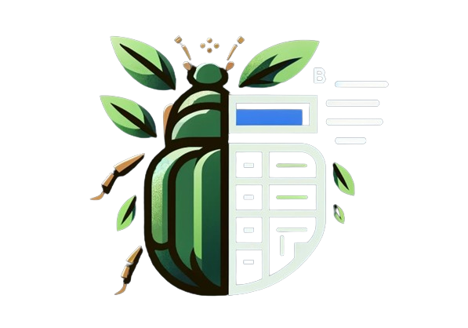

Nuevo registro de localidad para Glenus vestitus (Staphylinidae) en Colombia
Nicolás Ayala-Tovar, Ingri Cano-Plazas

Entomólogo, apasionado por el análisis de datos y la conservación
Nicolás Ayala-Tovar, Ingri Cano-Plazas
Nicolás Ayala-Tovar
Nicolás Ayala
Nicolás Ayala

Script en R para estimar la biomasa de insectos a partir de su abundancia y longitud, con la fórmula de Rogers et al. (1976). Usado en mi tesis de pregrado y ahora disponible como herramienta web.
Este sitio: un recurso didáctico abierto para enseñar biología con insectos, con fichas de la entomofauna bogotana, herramientas y juegos.